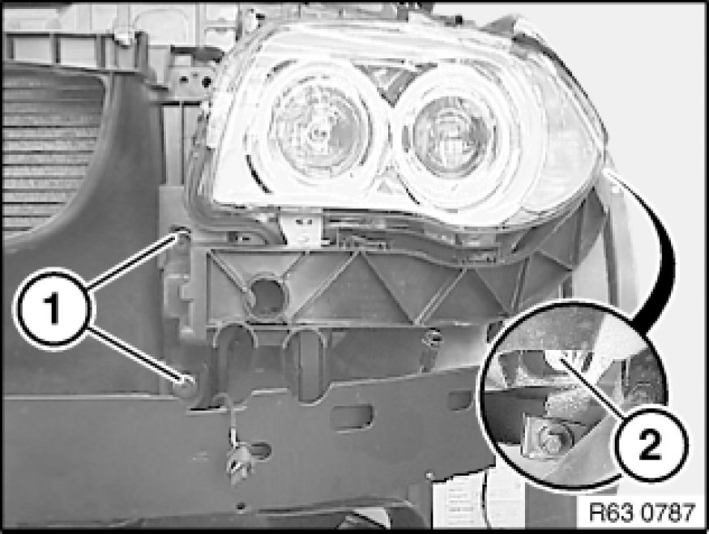
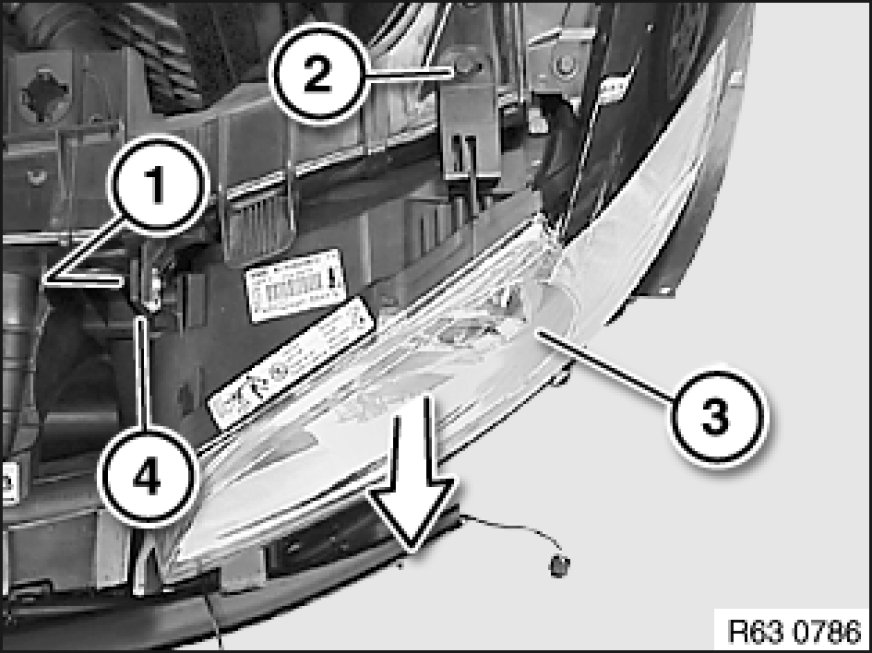
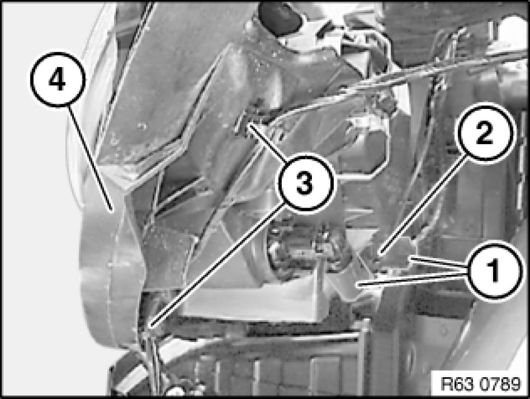

Removing and Installing/Replacing Left Headlight (Xenon Headlight)
63 12 010 - Removing and installing or replacing left headlight (xenon headlight)

Warning!
Version with xenon headlights: Danger to life due to high voltage! Therefore, before removing, disconnect all components from the power supply (lighting system and ignition off).
Work on the entire xenon lighting system (control unit, ignition unit with bulb) may only be carried out by specialist personnel.
Follow instructions for handling light bulbs (exterior lights) .

Important!
Read and comply with notes on protection against electrostatic damage (ESD protection) 61 35 ... Notes on ESD Protection (Electro Static Discharge).

Necessary preliminary tasks:
- Remove front bumper trim

Release screws (1). Tightening torque 63 12 4AZ Specifications.
Release screw (2). Tightening torque 63 12 5AZ Specifications.
Installation Note:
- Observe gap dimensions
- Adjust headlights

Important!
Mount for front light cluster (4) on headlight side loose.
Release screw (1). Tightening torque 63 12 2AZ Specifications.
Release screw (2). Tightening torque 63 12 3AZ Specifications.
Pull headlight (3) forwards slightly.

Build date up to 03/2007:
Disconnect plug connection (1).
Unclip wiring harness (2).
Detach wiring harness fasteners (3).
Remove headlight (4) towards front.
Build date after 03/2007:
Disconnect plug connection for headlight and remove headlight towards front.
Replacement:
- Remove headlight holder
- Remove ignition unit with bulb for xenon headlight
- Remove control unit for xenon headlights
- If necessary, remove bulbs.